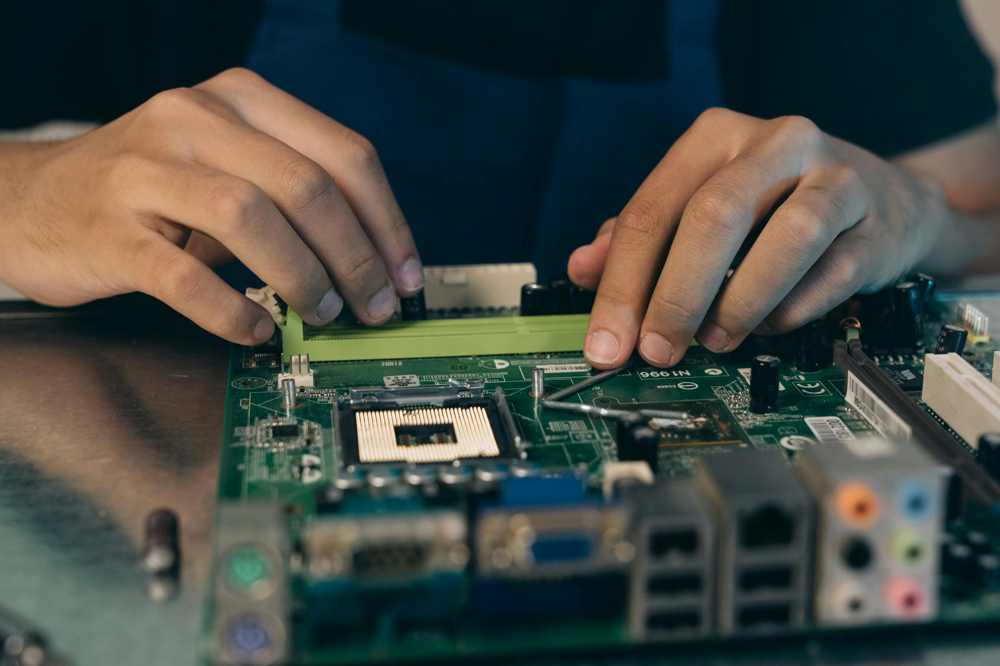

PC Building
Building a custom PC is a rewarding experience for anyone interested in technology. It gives you complete control over every component, from the processor to the case fans, allowing you to create a machine tailored to your exact needs. Whether the goal is gaming, productivity, or server‑level performance, choosing each part yourself ensures you get the best value and the best performance for your budget.
One of the biggest advantages of building your own PC is the ability to upgrade over time. Instead of replacing an entire prebuilt system, you can swap out individual components like the GPU, RAM, or storage as technology improves. This makes custom PCs more cost‑effective in the long run and gives you the freedom to keep your system running at peak performance for years.
Beyond performance, PC building is enjoyable. There’s something satisfying about assembling the parts, routing cables cleanly, and powering on a system you built with your own hands. It’s a blend of creativity, problem‑solving, and technical skill.


Photo by Mikhail Nilov on Pexels
Top Components That Matter Most in a Custom PC
- CPU — the brain of the system
- GPU — essential for gaming and rendering
- RAM — determines multitasking capability
- Storage — SSDs dramatically improve load times
- Power Supply — the foundation of system stability
- Motherboard — the central hub that connects and supports all components
Component Comparison Table
| Component | Purpose | Example |
|---|---|---|
| CPU | Handles processing tasks | AMD Ryzen 7 / Intel i7 |
| GPU | Renders graphics | NVIDIA RTX 4070 / AMD RX 7800 |
| RAM | Short‑term system memory | 16–32GB DDR4/DDR5 |
| Storage | Holds your OS and files | 1TB NVMe SSD |
| Power Supply | Provides stable power to all components | 650W–850W 80+ Gold PSU |
| Motherboard | Connects and supports all components | B550 / X670 / Z790 |
Pro Tip: Always check CPU and motherboard socket compatibility before buying parts.
For more PC building tips, visit Tom's Hardware.